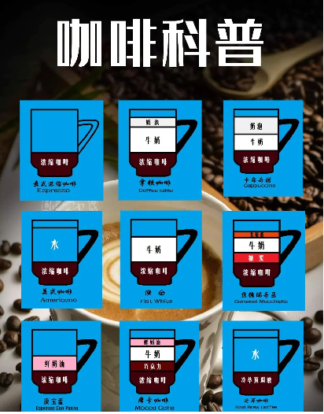
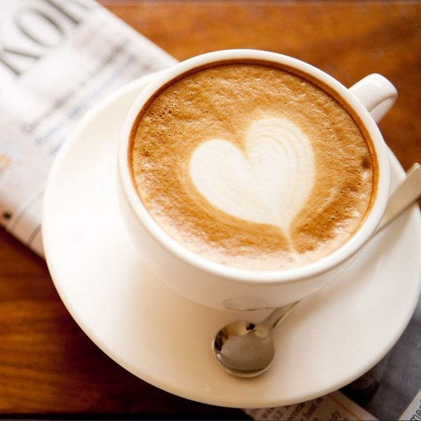
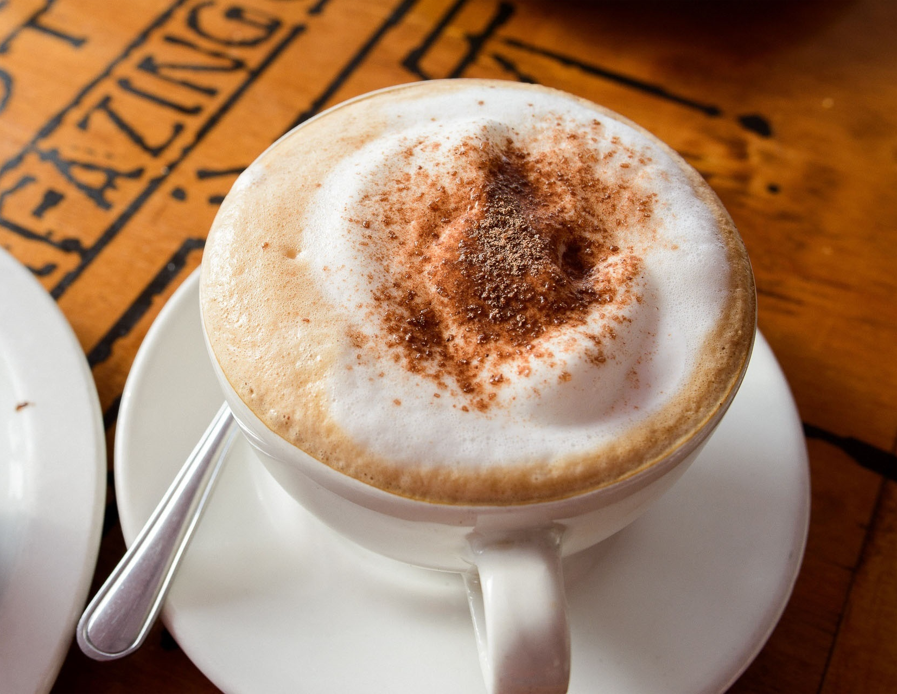
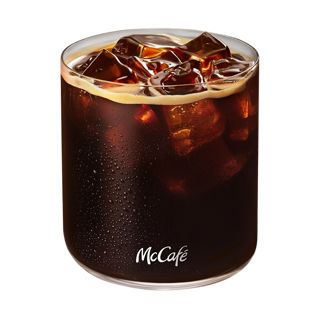
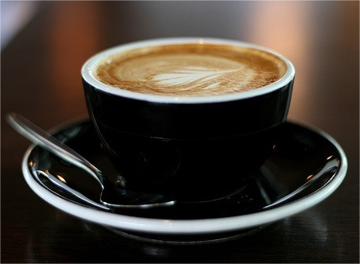
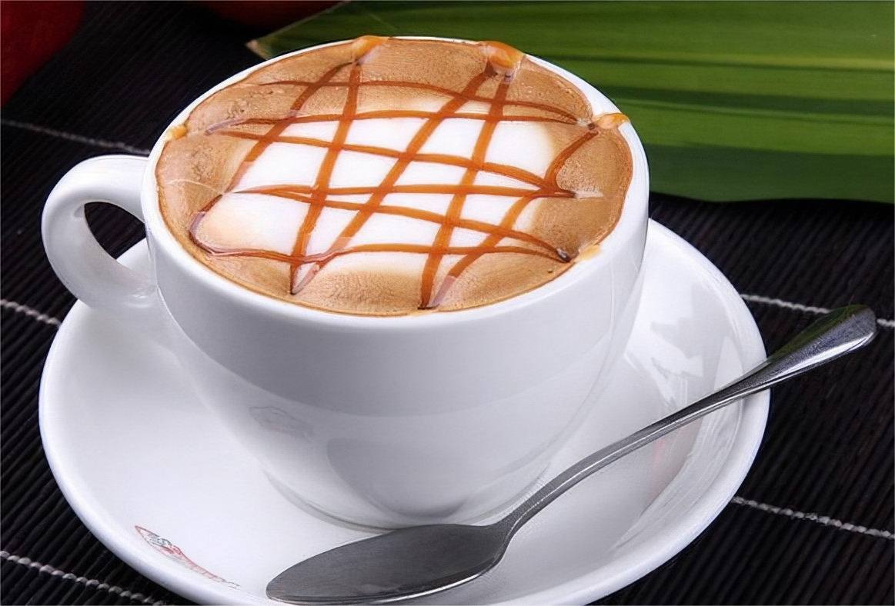
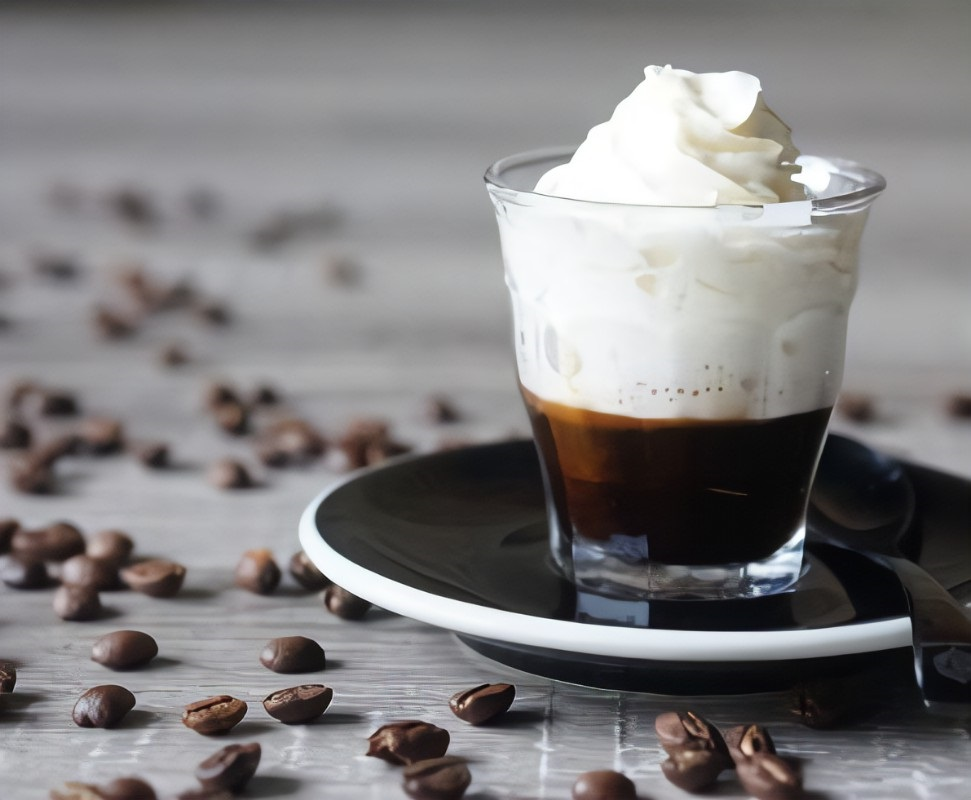
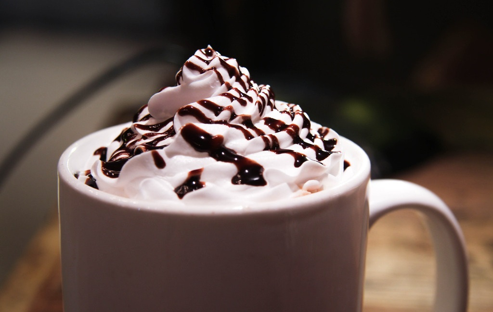
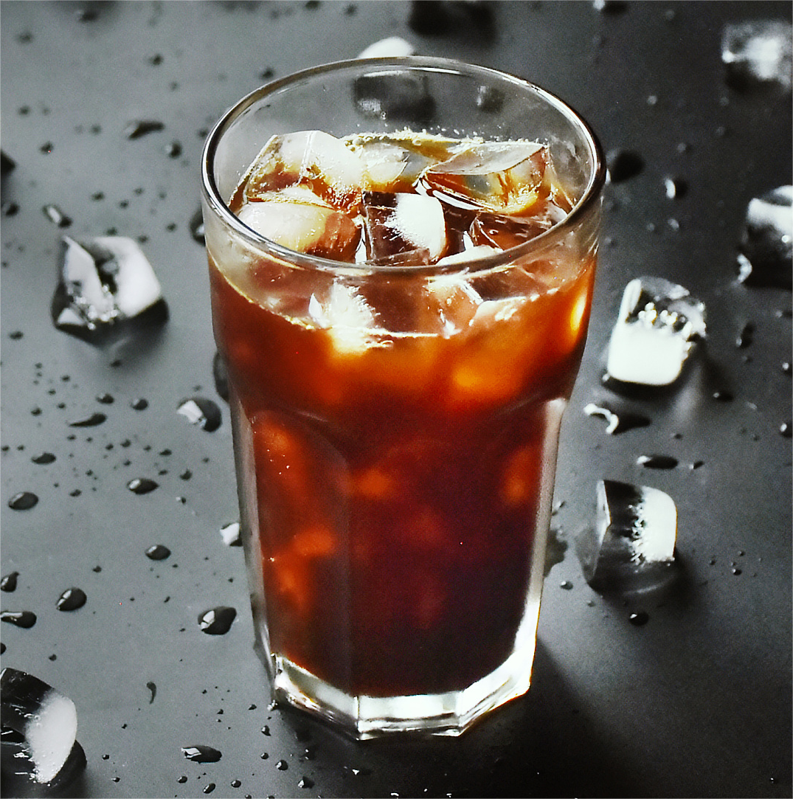

首先，上一张经典的咖啡结构图：
1、意式浓缩（Espresso）：
————最浓的咖啡，量少劲儿大，苦味很重，提神效果超棒
意式浓缩咖啡是所有常见咖啡种类中，口味最为浓郁的。
它最早起源于意大利，一般被用作其他咖啡，如拿铁，卡布奇诺等的基底。意式浓缩是由咖啡机直接打出来的，用90℃左右的水，借助高压冲过研磨过的咖啡粉后流出的咖啡液。一般以“shot”作为单位，汉语可以称之为“份”。
一份意式浓缩的量很少，通常只有一小杯，一口就能喝掉！但是由于水分含量很低，因此咖啡浓度极高，口味浓烈，色泽也十分浓稠。

2、拿铁咖啡（Coffee Latte）：
————意式浓缩加上牛奶，有很浓的奶香味，早餐优选。
由意式浓缩作为基底，加入蒸煮过的发泡牛奶，闻起来香气十足。一些资深咖啡师还会在上面拉出许多非常好看的图案，所以拿铁咖啡深受广大女性咖友喜爱。
相比于卡布奇诺的绵柔来说，拿铁奶沫少一些，而奶香气更浓一些，比较适合在早餐时来上一杯。学霸君听许多人抱怨过星巴克的拿铁咖啡味很淡，仿佛总有喝的就是纯牛奶的错觉。在这里，各位小伙伴需要了解一下，意大利语中的Latte，其实就是牛奶的意思。
如果有机会去意大利旅游，那么在当地的咖啡馆点拿铁，一定要说出全名（Caffè Latte），不然若你只说Latte，咖啡师真的会给你端上一杯牛奶哦！所以如果你觉得星巴克的拿铁味道淡的话，不妨告诉咖啡师：加一份浓缩，这样口味就会浓郁一些了。

3、卡布奇诺（Cappuccino）：
————意式浓缩加厚厚的奶沫，绵密柔滑。
卡布奇诺和拿铁在构成上基本类似，都是浓缩咖啡为基底，加入发泡牛奶。不同的是奶泡的厚度。卡布奇诺拥有更多更绵密的奶泡。咖啡味相对淡一些，但是奶香味也很浓郁，口感比拿铁更为绵柔。如果你喜欢喝软软的泡沫，那么卡布奇诺是你的优选。
卡布奇诺是一种加入以同量的意大利特浓咖啡和蒸汽泡沫牛奶相混合的意大利咖啡。此时咖啡的颜色，就象卡布奇诺教会的修士在深褐色的外衣上覆上一条头巾一样，咖啡因此得名。

传统的卡布奇诺咖啡是三分之一浓缩咖啡，三分之一蒸汽牛奶和三分之一泡沫牛奶。特浓咖啡的浓郁口味，配以润滑的奶泡；颇有一些汲精敛露的意味。撒上了肉桂粉的起沫牛奶，混以自下而上的意大利咖啡的香气，咖啡族为此而心动不已。
它有一种让人无法抗拒的独特魅力，起初闻起来时味道很香，第一口喝下去时，可以感觉到大量奶泡的香甜和酥软，第二口可以真正品尝到咖啡豆原有的苦涩和浓郁，最后当味道停留在口中，你又会觉得多了一份香醇和隽永……
玛奇朵（Macchiatto）甜蜜的印记玛奇朵Macchiatto在意大利文里是“印记、烙印”的意思。顾名思义，它的名字焦糖玛奇朵就象征着甜蜜的印记。
香醇浓烈的爱尔兰咖啡，适合思念心情的咖啡。
4、美式咖啡（Americano）：
————意式浓缩加水，较苦，不过有减肥的功效！
小伙伴们一定听说过咖啡具有一定的减肥功效，但这里是指的是什么都不加的“黑咖啡”！大部分意式咖啡或速溶咖啡中含糖量都比较高，喝它们是不能减肥的。我们俗称的“黑咖啡”便是美式咖啡。
美式的做法很简单，也是以意式浓缩作为基底，然后加水稀释。说白了就是兑了水的浓缩，不含糖和奶，完美保留了咖啡的原始味道，味道较苦，咖啡因含量较高。

5、澳白（Flat White）：
————柔润丝滑，香气十足，不伤胃！
澳白，也称为“白咖啡”，诞生于上世纪80年代，深受世界各国咖友推崇，它的起源地至今没有定论，有人说它源自澳大利亚，而另一些人则认为源自新西兰。
它有许多不同的名字，星巴克管它叫“馥芮白”，Costa管它叫“醇艺白”，瑞幸咖啡管它叫“澳瑞白”，而麦当劳则称之为“澳臻白”……每个名字都有浓浓的文艺范儿。
至于它的构成，看上去似乎和拿铁、卡布奇诺差不多，其实还是有区别的。白咖啡的奶沫比拿铁、卡布奇诺都要少，新西兰的白咖啡基底更是把浓缩咖啡换成了双份Ristretto，也就是精减浓缩，将萃取的时间缩短到20秒以内。相比于拿铁，白咖啡的咖啡味浓郁很多，而奶味相对淡一些，口感较拿铁更为柔滑顺口。
这里还要说一下，马兰西亚有一款速溶咖啡也叫做“白咖啡”，不过它和Flat White可是不一样的！

6、焦糖玛奇朵（Caramel Macchiato）：
————咖啡中加入了香草味糖浆和焦糖酱，喜欢喝甜的不要放过！
浓缩咖啡基底中混合了香草味的调味糖浆，再加入蒸煮过的热牛奶和奶泡，最后在上面淋上焦糖酱，无论味道还是颜值都相当高。焦糖玛奇朵是比较好喝的一款咖啡，味道甜甜的，不过含糖量较高，减肥人士少喝。

7、康宝蓝（Espresso Con Panna）：
————咖啡加上鲜奶油，口感不错不过热量略高
康宝蓝是在浓缩咖啡顶部打上鲜奶油，Panna在意大利语中的意思就是奶油，Con是“和”的意思，所以翻译成中文就是“浓缩 和 奶油”。外形很好看，仿佛冰淇淋一般，不过奶油的热量是很高的，所以减肥人士最好别碰它。

8、摩卡咖啡（Cafe Mocha）：
————巧克力味道的咖啡，好喝但是热量最高！
摩卡集合了咖啡、牛奶、鲜奶油、巧克力于一身，口感顺滑且味道丰富，如果你喜欢巧克力的味道，那么摩卡一定会充分满足你的味蕾！而且摩卡层次感强烈，在颜值上也俘获了许多女性的芳心。不过，学霸君要提醒小伙伴，这个集合了奶油与巧克力的摩卡，它的卡路里可是超级高！

9、冷萃咖啡（Cold Brew Coffee）：
————超长时间慢速萃取，口感顺滑，时尚又有品位！
冷萃，顾名思义，即是使用冷水进行萃取的咖啡。通常，无论是用咖啡机打出来的浓缩咖啡，还是我们自己冲煮的手冲咖啡，都是以热水来萃取咖啡粉，萃取时间短。而冷萃咖啡使用常温水或是冷水来进行萃取，但是萃取时间会高达12小时以上，属于慢速萃取。
在如此长的时间内，咖啡粉被水全程浸泡，因此咖啡所含物质得到了充分释放，咖啡味道比美式更为浓郁。喝冷萃时一般会加水稀释，再加入冰块，顺滑的口感令人难忘，却没有美式那么重的苦味，在咖啡中独树一帜，拥有其独特的魅力，圈粉了全球大量咖友！
